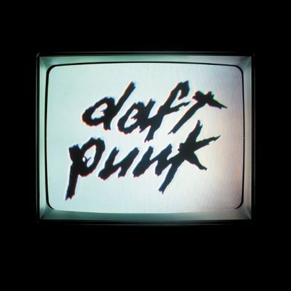
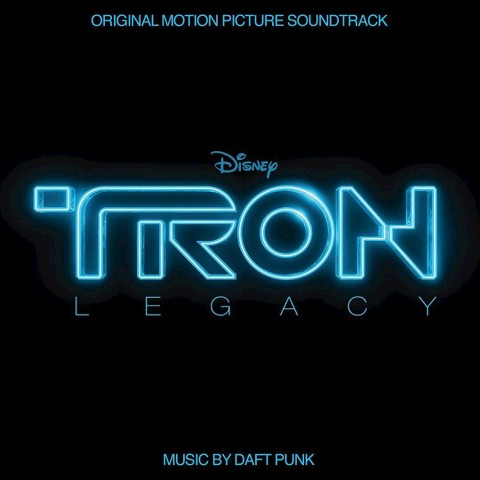
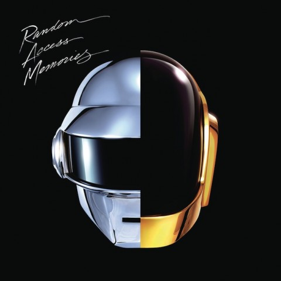

init, fetch it, diff it, add it,\n tag it, push it, git commit it,\n clone it, merge it, log it, diff it,\n hack it, clean it, cherry-pick it,\n stash it, pop it, grep it, move it,\n config, prune it, format-patch it, add it, reset, add it, show it, git help reflog, pull --rebase it, branch it, merge it, relink, hack it, view it, code it, then review it, Send pull request, send pull request.
Human After All
Starting on 13 September and ending on 9 November 2004, Daft Punk devoted six weeks to the creation of new material.[26] The duo released the album Human After All in March 2005.
Buy >Tron Legacy
The band collaborated with him for two years on the score, from pre-production to completion. The score features an 85-piece orchestra, recorded at AIR Lyndhurst Studios in London.
Buy >Random Access Memories
Daft Punk worked on their fourth studio album, Random Access Memories in collaboration with singer-songwriter Paul Williams and Chic frontman Nile Rodgers.
Buy >